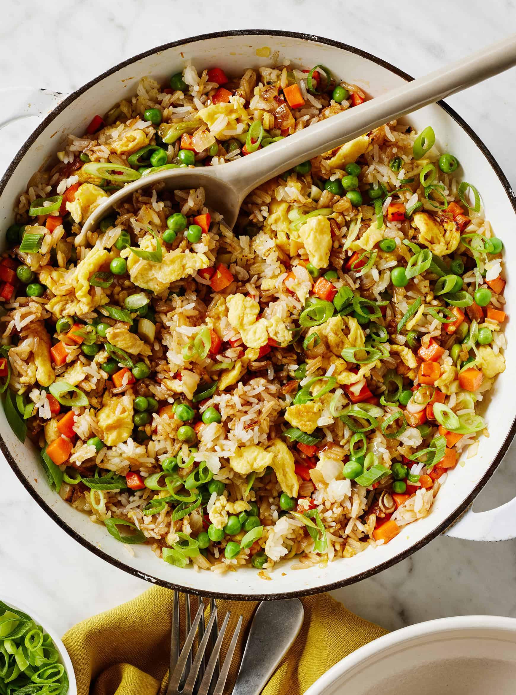

Fried Rice

Description
Fried rice is a flavorful stir-fried dish made with cold cooked rice, scrambled eggs, carrots, green peas, garlic, onions, and spring onions. It is seasoned with soy sauce, oyster sauce, and black pepper for a rich and savory taste.
This quick and versatile dish is perfect for using leftover rice and can easily be customized with your favorite vegetables or protein. It can be served as a satisfying main course or as a side dish with other meals.
Ingredients
- 4 cups cold cooked rice
- 2 eggs
- 2 tbsp cooking oil
- 3 cloves garlic, minced
- 1 small onion, diced
- ¼ cup diced carrots
- ¼ cup green peas
- 2 tbsp chopped spring onions
- 2 tbsp soy sauce
- 1 tbsp oyster sauce (optional)
- ½ tsp ground black pepper
- ¼ tsp salt (optional)
Steps
- Heat the cooking oil in a large pan or wok over medium-high heat.
- Beat the eggs and scramble them until fully cooked. Remove and set aside.
- Sauté the minced garlic until fragrant.
- Add the diced onion and cook until translucent.
- Stir in the diced carrots and cook for about 2 minutes.
- Add the green peas and cook for another minute.
- Add the cold cooked rice, breaking apart any clumps with a spatula.
- Pour in the soy sauce and oyster sauce.
- Season with ground black pepper and salt, if using.
- Stir-fry for 3–5 minutes until the rice is evenly coated with the seasonings.
- Return the scrambled eggs to the pan and mix well.
- Add the chopped spring onions and stir for another minute before serving hot.